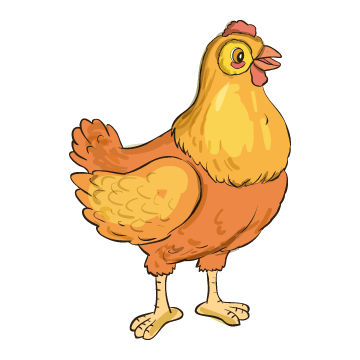

1.
Keresd meg a szövegben előforduló összes
ty
, illetve
Ty
betűt, és kattints rá!

ty
Ty
Juli néni, Kati néni,
Letye-petye-lepetye,
Üldögélnek a sarokba’,
jár a nyelvük, mint a rokka,
Letye-petye-lepetye!